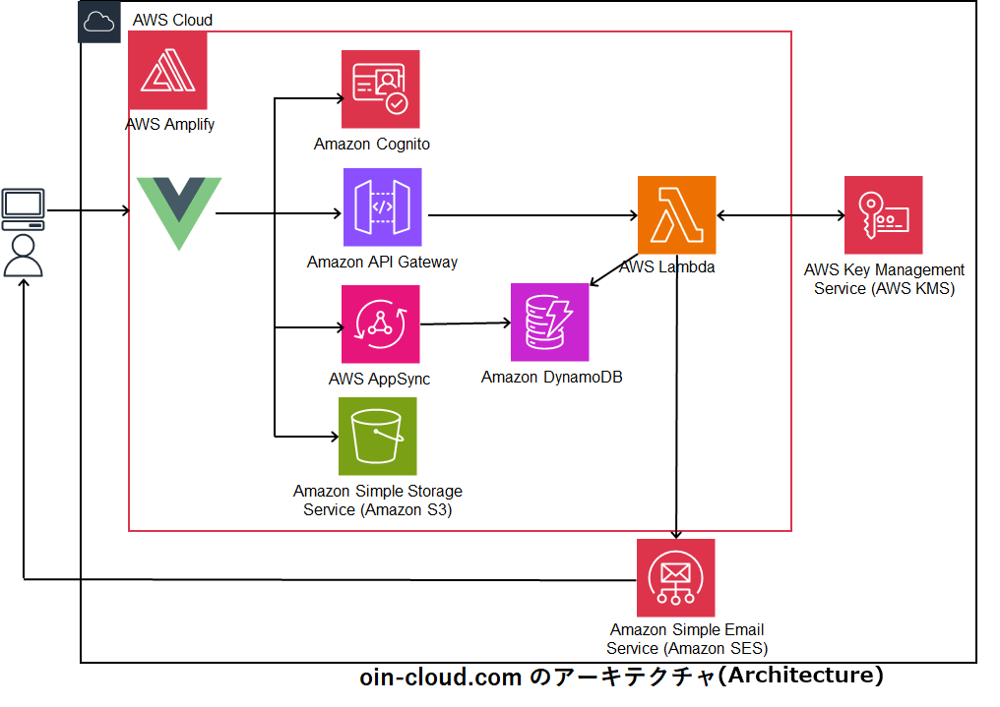

1.署名に使われる電子証明書は,OPENSSL+AWS KMSで作られたself-sign証明書となっています
2.タイムスタンプについても オープンソースのタイムススタンプ(https://freetsa.org/index_en.php)を利用しています
付与される電子署名について
付与される電子署名は、署名タイムスタンプ付署名（PAdES-T）です。文書を登録して、署名依頼するにはアカウント登録が必要です。メールアドレス＋パスワードでアカウント登録を行えます 登録されたメールアドレスに認証コードが送られますので、コード入力すれば登録完了です
お名前、会社名等を登録します（登録すると会社名+名前で文書回送されます）
署名対象の文書を登録します。文書はPDFのみです。ファイルの大きさは2MBまでです。 登録できる文書は署名する1文書のみで添付文書等は追加できません。 登録できるPDFの仕様には制限があります
文書を署名してもらう相手先を追加します。 それぞれの相手先の名前、メールアドレス、署名属性（署名時の入力有無）を設定します。
署名時に、テキスト文字列や印影、署名日付等設定がある場合に使います 回送ルート保存後、入力対象ページにボタンクリックと、ドラッグ＆ドロップで入力位置・領域を指定、入力依頼内容を記載します 署名者それぞれに複数個設定できます。
文書を回送します。署名は設定したルートに従って順に回送されます
メールアドレスに押印クラウドからの署名メールが届きます メール内にあるリンクをクリックすることにより署名文書が開きます 内容を確認し、入力ある場合には入力、署名します リンクは送付後7日間有効です
内容に不備等ある場合には、理由を記載し却下できます。却下されたメールは、文書作成者に送られます。
すべての署名者の署名が完了すると、ルート全員に署名完了メールが送られます リンクをクリックすることにより署名文書が開きます。 リンクは完了メール送付後7日間は有効です。署名文書はダウンロードして保存してください

利用している主なオープンソースは下記のとおりです。
バックエンド:PDFに署名する機能で使っていますnode-signpdf(https://github.com/vbuch/node-signpdf)
node-forge (https://github.com/digitalbazaar/forge)
フロントエンド：PDFに署名のための設定をするところで使っていますPdf-editor(https://github.com/Perfect0B0D/Pdf-editer?tab=readme-ov-file)
Pdf-editor vue版(https://github.com/LibreSign/vue-pdf-editor)
タイムスタンプ freeTSA.org (https://freetsa.org/index_en.php)を使っています